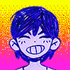
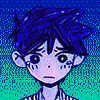
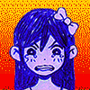
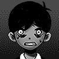

EMOÇÕES
EMOÇÕES é uma mecânica de jogo apresentada no OMORI.
Eles determinam a eficácia dos ataques de um personagem contra um inimigo, além de aplicar modificadores especiais aos ataques e estatísticas do personagem.
| Conteúdo |
|---|

VISÃO GERAL
O sistema de Emoções funciona de maneira semelhante a pedra-papel-tesoura, com cada EMOÇÃO tendo uma contrapartida eficaz e ineficaz.
Quando um personagem ataca, seu ataque pode ter aumentado ou reduzido o dano dependendo da eficácia de sua EMOÇÃO atual contra a EMOÇÃO do(s) alvo(s) do ataque.
EMOÇÕES podem ser infligidas a amigos / inimigos por meio de ATAQUES, HABILIDADES, FOLLOW-UPS, o uso de ITENS ou eventos com script.
O jogador deve se concentrar em decidir que emoção um personagem deve ter para ganhar vantagem sobre qualquer inimigo que encontrar. Conforme observado pelo próprio HERO, FELIZ vence BRAVO, BRAVO vence TRISTE e TRISTE vence FELIZ!
Algumas EMOÇÕES também afetam diferentes stats para amigos e inimigos, além de fornecer modificadores exclusivos.
Além disso, as EMOÇÕES de inimigos derrotados podem conceder efeitos de bônus.
Inimigos HAPPY têm um item e taxa de drop CLAM maiores, enquanto inimigos ANGRY darão mais EXP. Inimigos do SAD são a exceção, dando CLAMS e EX reduzidos
As EMOÇÕES podem ser "empilhadas" até três vezes, com cada pilha aumentando a potência dos efeitos da emoção. Por exemplo, se um amigo/inimigo FELIZ é afetado por algo que o tornaria FELIZ, ele se torna ECSTÁTICO e, se repetido, MANÍACO.
Diferentes EMOÇÕES geralmente aplicam efeitos visuais exclusivos enquanto também alteram a aparência dos amigos / inimigos afetados.
LISTA DE EMOÇÕES
NEUTRO

O grupo sempre aparecerá como NEUTRO no início da batalha, exceto se afetado por um CHARME como o SACOLA DE PUNCHES ou ao encontrar um inimigo que invoque a emoção ASSUSTADO.
Estar neutro não afeta o jogo de forma alguma; todas as estatísticas de um amigo/inimigo NEUTRO são normais, e todos os ataques contra personagens NEUTROS causam danos normais e não têm efeitos especiais.
FELIZ
Um amigo/inimigo FELIZ possui mais SORTE e a VELOCIDADE, mas menos taxa de hits.
Além das alterações visuais, HAPPY é geralmente indicado por um fundo gradiente amarelo-magenta para amigos e uma aura amarela para inimigos.
Quando um amigo/inimigo está ainda mais FELIZ, ele se torna ECSTÁTICO e, subsequentemente, MANÍACO.
Inimigos FELIZES têm uma chance maior de largar itens após a batalha. Eles também recompensam 50% mais CLAMS do que inimigos NEUTROS.
| Taxa de Hit | Sorte | Velocidade | vs Bravo | vs Triste | |
|---|---|---|---|---|---|
| Feliz | -10% | 200% | 125% | 80% | 150% |
| Ecstático | -20% | 300% | 150% | 65% | 200% |
| Maníaco | -30% | 400% | 200% | 50% | 250% |
*A taxa de hit é subtrativa, o resto é multiplicativo.
TRISTE
Um amigo/inimigo TRISTE terá aumentado a DEFESA, mas diminuído a VELOCIDADE. Parte do dano que seria causado ao CORAÇÃO é causado ao SUCO.
Além das alterações visuais, o TRISTE é geralmente indicado por um fundo gradiente azul-turquesa para amigos e uma aura azul para inimigos.
Quando um amigo/inimigo é ainda mais TRISTE, ele se torna DEPRIMIDO e, subsequentemente, MISERÁVEL.
Inimigos TRISTES recompensam 25% menos EXPERIÊNCIA e 20% menos CLAMS do que inimigos NEUTROS.
| Defesa | Velocidade | Dano convertido para Suco | vs Feliz | vs Bravo | |
|---|---|---|---|---|---|
| Triste | 125% | 80% | 30% | 80% | 150% |
| Depressivo | 135% | 65% | 50% | 65% | 200% |
| Miserável | 150% | 50% | 100% | 50% | 250% |
BRAVO
Um amigo/inimigo BRAVO terá aumentado o ATAQUE, mas diminuído a DEFESA. Isso é eficaz contra aqueles que estão tristes, mas fraco contra aqueles que estão FELIZES.
Além das alterações visuais, ANGRY é geralmente indicado por um fundo gradiente laranja-vermelho para amigos e uma aura vermelha para inimigos.
Quando um amigo/inimigo está ainda mais ANGRY, eles ficam ENRAGADOS e, subsequentemente, FURIOSOS.
Inimigos ANGRY recompensam 66% mais EXPERIÊNCIA do que oponentes NEUTROS.
| Dano | Defesa | vs Triste | vs Feliz | |
|---|---|---|---|---|
| Bravo | 130% | 50% | 80% | 150% |
| Enfurecido | 150% | 30% | 65% | 200% |
| Furioso | 200% | 15% | 50% | 250% |
ASSUSTADO
Ao contrário de outras EMOÇÕES, ASSUSTADO não está listado na TABELA DE EMOÇÕES do HERO e não pode ser infligido por meios normais, como ITENS ou HABILIDADES. Também não pode ser infligido a inimigos.
Um amigo AFRAID não pode executar FOLLOW-UPS ou usar outras habilidades além de GUARD e CALM DOWN. AFRAID também aumenta o dano recebido em 1,5 vezes.
Esta EMOÇÃO é normalmente reservada para batalhas especiais relacionadas à trama (variantes de ALGO, ANGI, ABBI, BASIL, ESTRANGER e OMORI), embora também possa ser infligida pelos inimigos regulares CREEPYPASTA e HUSHPUPPY. Além disso, em qualquer batalha com inimigos de aranha, HERO começará AFRAID por padrão.
AFRAID normalmente não tem estágios superiores. No entanto, exclusivo para a luta BASIL, SUNNY chega a um ponto de ruptura e fica STRESSED, uma emoção única vista em nenhum outro lugar em todo o jogo.
TRIVIA
- O gráfico de emoção prevê como o grupo principal lidou com a morte de MARI no MUNDO REAL:
- SUNNY ficou profundamente traumatizado a ponto de ser incapaz de expressar plenamente suas emoções, pois o evento o levou a passar quatro anos sozinho como um hikikomori recluso.
- AUBREY desenvolveu sentimentos de raiva em relação aos seus velhos amigos, pois ela pensou que eles a tinham abandonado e seguiu em frente muito rapidamente da morte de MARI. Isso a levou a se tornar uma violenta delinquente de temperamento curto no presente.
- KEL ainda manteve seu comportamento feliz e otimista fazendo novos amigos praticando esportes e tentando encontrar felicidade nos outros.
- HERO entrou em um longo estado de depressão por um ano, fechando-se e sendo incapaz de fazer nada até kel conseguiu ajudá-lo a colocar sua vida de volta nos trilhos.
- Basil tornou-se um naufrágio nervoso, e ainda mais na presença de Sunny, aterrorizado que a verdade da morte de Mari iria de alguma forma ressurgir.
- OMORI é o único personagem jogável com emoções de 3 estágios (MANIC, MISERABLE e FURIOUS), já que os outros membros do partido só têm emoções de dois estágios. Isso é compartilhado com alguns dos chefes do HEADSPACE, como SPACE EX-BOYFRIEND, SWEETHEARTe UNBREAD TWINS.
-
OMORI foi originalmente destinado a ter uma emoção medo, mas isso foi descartado provavelmente devido ao primeiro ser incapaz de expressar totalmente o medo.
- Isso foi dado a SUNNY em vez disso. No entanto, a codificação da demonstração ainda contém dados da emoção medo do OMORI.
- Nos dados do jogo, há uma variante não usoda de segundo estágio para a emoção medo chamada PÂNICO, o que significa que STRESSED OUT é a variante do terceiro estágio da emoção MEDO. Ele não tem gráficos associados a ele e não tem nenhuma taxa de elemento definida, o que significa que os danos recebidos não serão aumentados como AFRAID. No entanto, isso ainda vai impedi-lo de usar habilidades. Suas categorias são EMOÇÃO e PÂNICO, como seria de esperar. Estranhamente, porém, STRESSED OUT também está na categoria PÂNICO.
- A partir da versão 1.0.7 do jogo e em diante, se HERO tem uma vantagem emocional sobre outro personagem, sua cura (tanto para HEART quanto JUICE) torna-se mais eficaz.